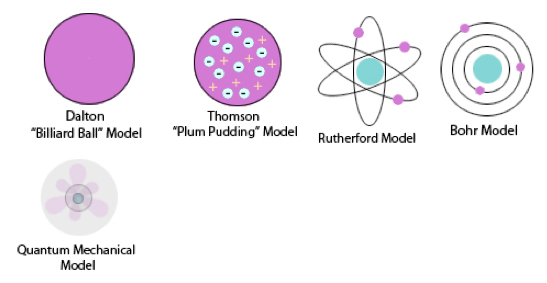

Credit: socratic.org
Atomic Terms
- Atom - the smallest piece of an element still representing itself
- Proton - atomic particle with one positive charge (1+)
- Electron - atomic particle with one negative charge (1-)
- Neutron - neutral particle located in an atom’s nucleus
- Nucleus - small area in the center of an atom with most of the mass and positive charge
- Mass Number - sum of the quantity of protons and neutrons inside an atom
- Atomic Mass - quantity of matter inside an atom
- Isotope - atoms of the same element with different amounts of neutrons
- Ion - atom that is no longer neutral due to the gain or loss of electrons
- Positive Ion - occurs when a neutral atom loses 1 or more electrons, shown as a subscript positive sign (₊)
- Negative Ion - occurs when a neutral atom loses 1 or more electrons, shown as a subscript negative sign (₋)
- Periodic Table - chart of the elements arranged into columns and rows relative to their chemical and physical properties